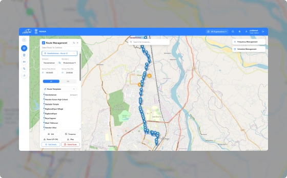
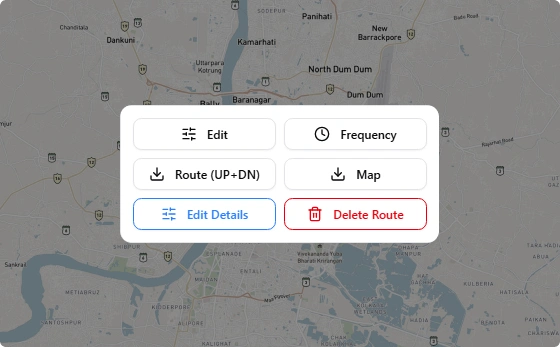
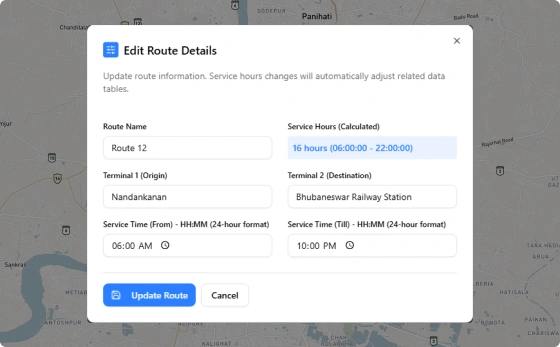

Design, edit, and manage bus routes with an intuitive visual planning toolkit built for transit operators.

Create and configure routes from end to end using intuitive, map-based tools.

Manage route changes in a controlled environment without disrupting live operations.

Configure key operating parameters that keep planning aligned with real-world service needs.
See how PUBBS Transit brings planning, scheduling, dispatch, fleet management, and passenger services together in one connected platform.
Book a Demo